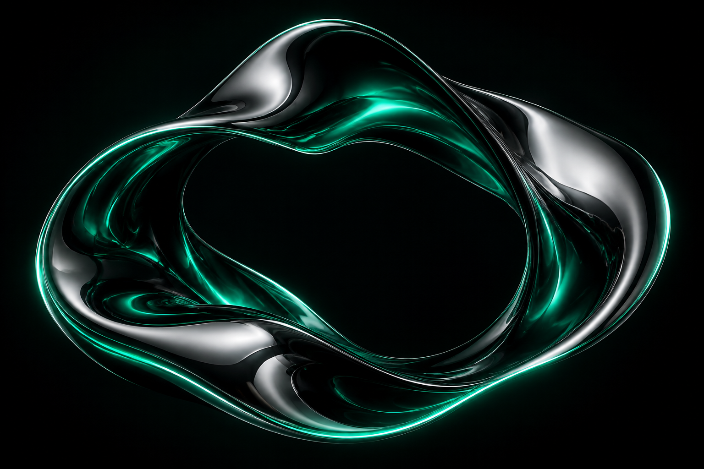
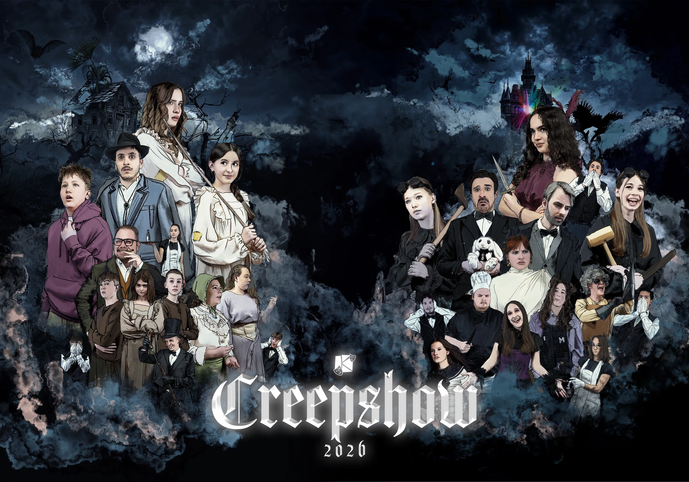
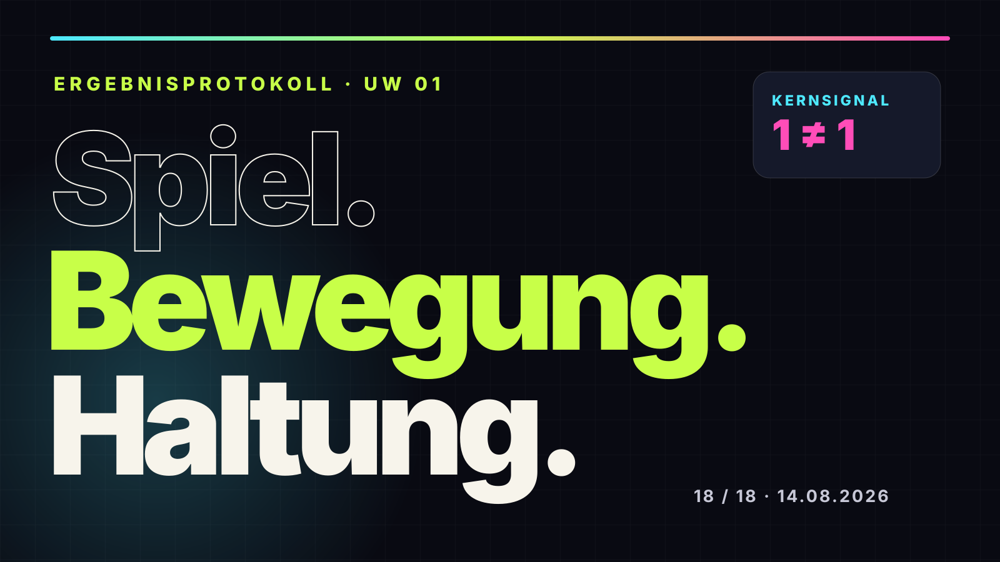
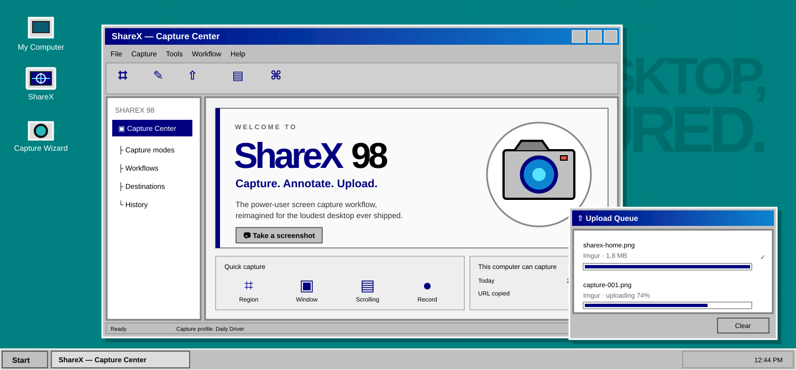
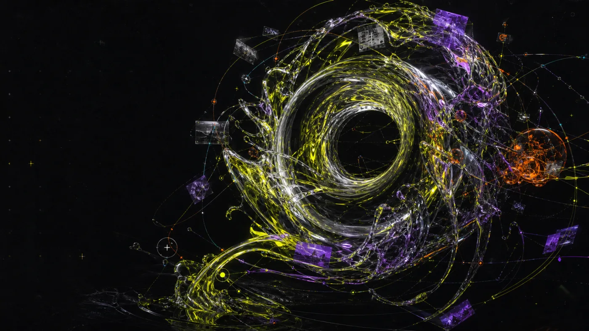
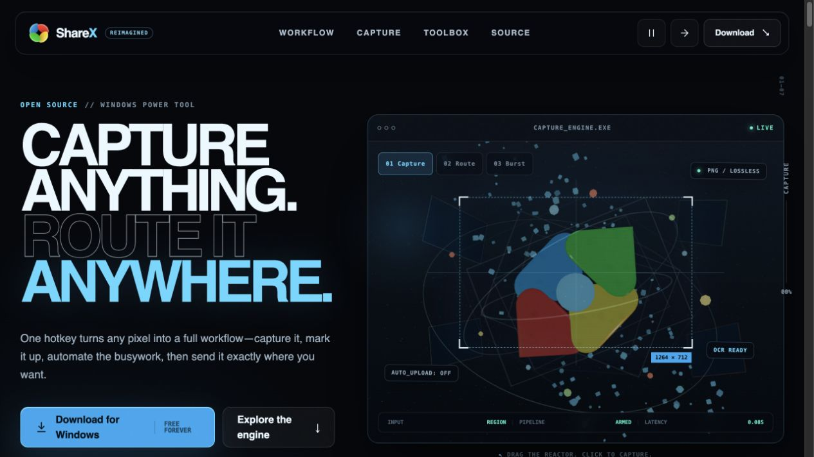

OPEN CABINET // STATIC WEB EXPERIMENTS
Small pages.
Unreasonable
ambition.
A growing shelf of interactive websites, speculative interfaces, and polished one-off ideas. Every page is built to be explored.
EXPERIMENTS
001 THE COLLECTION
Newest first

PRODUCT REDESIGN / INTERACTIVE / 2026
ShareX: Capture without limits
A dimensional capture playground with mint-green artwork, region selection, callouts, and downloadable PNG captures.
- REACT
- CSS 3D
- INTERACTIVE
- RESPONSIVE

THEATER / PRODUCT PROTOTYPE / 2026
Creepshow — Probenplan
A clickable planning prototype for rehearsals, attendance, reminders, polls, statistics, and calendar coordination at Kolpingtheater Ramsen.
- REACT
- RESPONSIVE
- INTERACTIVE
- ACCESSIBLE

EDUCATION / EDITORIAL / 2026
Spiel. Bewegung. Haltung.
A gloriously overbuilt, source-labeled lesson report about movement education, role-model behavior, safety, participation, and the difference between sport and movement.
- VANILLA JS
- RESPONSIVE
- PRINT CSS
- ACCESSIBLE

OPERATING SYSTEM / INTERACTIVE / 2026
ShareX — Windows 98 Edition
A complete desktop simulation where ShareX lives inside draggable windows, capture wizards, upload queues, Start menus, and unapologetically chunky pixels.
- WIN98 UI
- VANILLA JS
- INTERACTIVE
- RESPONSIVE

EDITORIAL REDESIGN / IMAGEGEN / 2026
ShareX — Afterimage Lab
A bio-digital editorial redesign where capture workflows bloom through original imagegen artwork, reactive specimens, and luminous motion.
- IMAGEGEN
- THREE.JS
- WEBGL
- RESPONSIVE

PRODUCT REDESIGN / THREE.JS / 2026
ShareX — The Capture Engine
A cinematic, interactive reinvention of ShareX where every capture becomes a kinetic workflow reactor.
- THREE.JS
- WEBGL
- VANILLA JS
- RESPONSIVE